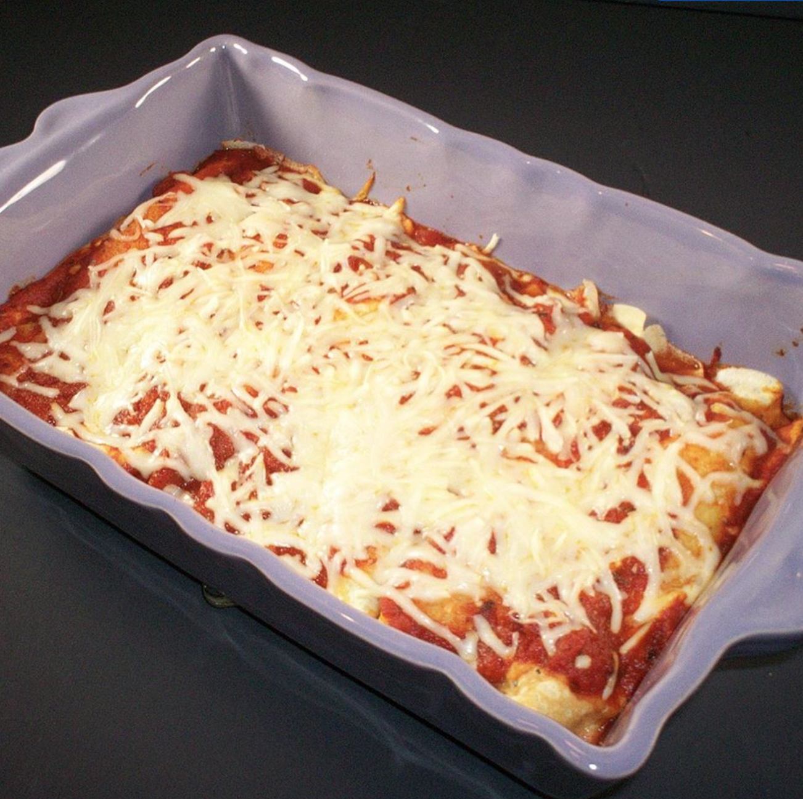

Manicotti

Description
Italian savory crepes, known as crepelle are filled and baked in a béchamel sauce and traditionally served as a main dish on special occasions, including Christmas. In this version, the homemade crepes are filled with a vegetarian spinach and ricotta mixture, but you can easily vary the filling.
Ingredients
- 4 eggs
- 1 teaspoon salt
- 2 cups all-purpose flour
- 2 cups milk
- 1 cup melted butter
- 1 tablespoon vegetable oil
Steps
- Whisk 4 eggs and 1/4 teaspoon salt together in a bowl; gradually whisk flour into eggs, alternating with milk, to make a smooth batter. Whisk melted butter into batter; refrigerate at least 1 hour.
- Pour vegetable oil into a small bowl. Heat a small skillet over medium heat; brush skillet with vegetable oil using a pastry brush. Ladle in enough batter to lightly cover the bottom of the skillet, about 1/4 cup; swirl skillet to cover bottom completely. Cook crepe until it turns lightly golden brown on the bottom; flip and cook until other side has small brown spots. Repeat with remaining batter, brushing the skillet with oil as needed to prevent crepes from sticking; set cooked crepes aside between layers of waxed paper.
- Preheat oven to 350 degrees F (175 degrees C).
- Lightly mix spinach, ricotta cheese, cream cheese, Parmesan cheese, parsley, green onion, onion powder, oregano, 1/2 teaspoon salt, and 2 eggs in a bowl until filling is thoroughly combined.
- Spread 1 cup marinara sauce into the bottom of a 9x13-inch baking dish. Place a crepe onto a work surface and spoon about 3 tablespoons filling, or more as needed, in a line down the center of each crepe. Roll crepe over filling and set into sauce in pan; repeat with remaining crepes and filling, laying filled crepes into pan. Spread remaining marinara sauce over filled crepes. Sprinkle with mozzarella cheese.
- Bake in the preheated oven until bubbling and mozzarella cheese is melted and slightly browned, 20 to 30 minutes.